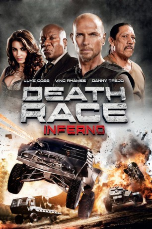
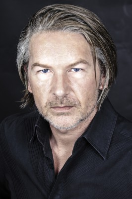

#3294 Death Race: Inferno
 
 IMDB-Wertung: 5.5 / 10
IMDB-Wertung: 5.5 / 10  Metascore: 0
Metascore: 0 
Der Sträfling Carl Lucas ist eine Gefängnis-Legende: Als "Frankenstein" beherrscht er die brutalen Autorennen des DEATH RACE. Nur noch ein Sieg und er ist frei. Diesmal geht das mörderische Rennen durch die unerbittliche Kalahari Wüste Südafrikas. Hier muss Lucas nicht nur die anderen Fahrer ausschalten, sondern auch gegen eiskalte Medienmacher kämpfen, die hinter den Kulissen alles tun, um "Frankensteins" Sieg zu verhindern. Lucas gibt Vollgas im alles entscheidenden Kampf um seine Freiheit...
Jahr: 2013
Dauer: 105 Minuten
FSK: 18
Land: Deutschland Studio: Sky CinemaTonspuren: DTS - ,
Untertitel: Deutsch,
Auflösung: 1080p (1920x1080) Größe: 10004 MB
Genre: Action, Thriller, Sci-Fi
Regisseur: Roel Reiné
Drehbuch: Paul W.S. Anderson, Tony Giglio, Tony Giglio, Paul W.S. Anderson, Robert Thom
Soundtrack: Trevor Morris
Darsteller:
 Luke Goss als Carl Lucas
Luke Goss als Carl Lucas Ving Rhames als Weyland
Ving Rhames als Weyland Danny Trejo als Goldberg
Danny Trejo als Goldberg Dougray Scott als Niles York
Dougray Scott als Niles York Fred Koehler als Lists
Fred Koehler als Lists- Tanit Phoenix als Katrina
- Robin Shou als 14K
- Roxane Hayward als Prudence
- Jeremy Crutchley als Psycho
- Eugene Khumbanyiwa als Nero
- Mark Elderkin als Sgt. Fury
- Charlbi Dean Kriek als Calimity J
 Tanya van Graan als Amber
Tanya van Graan als Amber- Ebby Weyime als Maria Rodriguez
- Yrsa Daley-Ward als Salinas
 Langley Kirkwood als Dr. Klein
Langley Kirkwood als Dr. Klein- Natalie Becker als Pretty Reporter
- Kim Engelbrecht als Kelly O' Donnell
-  Sean Cameron Michael als New Doctor
- Irina Miccoli als Weyland's Assistant
- Chase Armitage als Apache , archive footage, uncredited
 Lauren Cohan als September Jones , archive footage, uncredited
Lauren Cohan als September Jones , archive footage, uncredited- Anton David Jeftha als The Jackal , uncredited
- Brandon Livanos als Pretty Boy , uncredited
- Hlubi Mboya als Diabolos
- Bart Fouche als Razor
- Michael Dube als Baby , credit only
- Michelle van Schaik als Olga Braun
- Jesselyn Abrahamse als Silky
- Roxane Van Rooyen als Elsa
- Shaamilla Noordien als Corns
- Gina Athans als Ali
- Simone Van Rooyen als Alva Twin
- Kim Syster als Olivia
- Bernard Fisher als Command Center Technician
- Sylvia Mngxekeza als KP Goldberg Fan Guard
- Peter Butler als Executive
- Quentin Chong als Triad Driver
- Dick Ervasti als Commercial , uncredited
- Olivia Jackson als Palmer , uncredited
- Louis Joubert als Psycho Pit Crew #1 , uncredited
- Dumani Mtya als Angry Skinhead , uncredited
- Michael Solomon als The Sheik , archive footage, uncredited
- Rowan Thane als Tunnel Riot Guard , uncredited
Datei: X:\FSK18-Collections\Death Race\Death Race Inferno (2013, FSK18, 1920x1080).mkv seit 04.03.2016
Festplatte: FSK18
 Es gibt insgesamt 7 Filme in der Gruppe 'FSK18-Collections\Death Race'
Es gibt insgesamt 7 Filme in der Gruppe 'FSK18-Collections\Death Race'